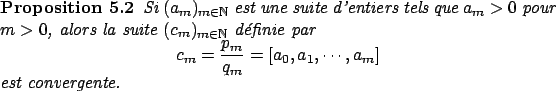

Nous proposons dans cette section les énoncés des résultats utilisés dans cet article sans démonstration, le lecteur intéressé pourra se procurer les preuves de ces résultats classiques sans difficulté, par exemple dans [1] .
